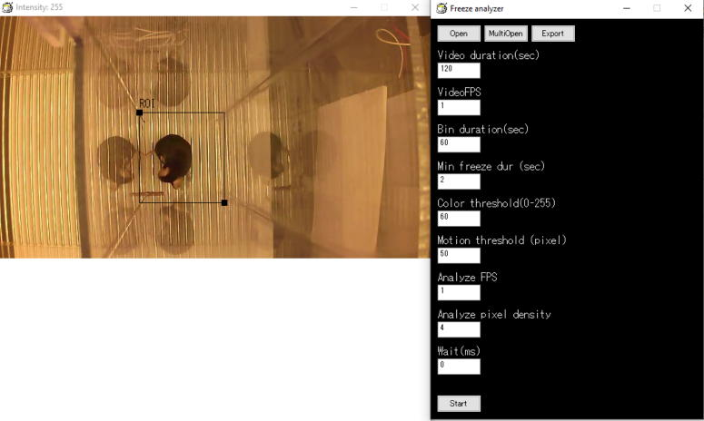

FreezeAnalyzer
What's FreezeAnalyzer
FreezeAnalyzer is software that quantifies freezing behavior of animal in AVI format video (videos recorded with AviRecorder are recommended).
How to use
1. Make sure that Xvid is installed already. If it hasn't, install it from the Xvid installer included in this package. Start FreezeAnalyzer***.exe in the FreezeAnalyzer folder.
2. Open the video file with Open button (if you want to perform batch analysis, use "MultiOpen" button).
3. Enter analysis conditions and click the Start button.
4. Export the analysis result with "Export" button.

ROI: The area to be analyzed. You can change the range by dragging the black squares.
Video duration: Video length.
Video FPS: Frame rate of the video (frames/sec).
Bin duration: Length of time per bin.
Min freeze dur: Minimum duration to be considered freezing (exp. If 2, freezing of less than 2 seconds is not counted as freezing)
Color threshold: Color threshold to detect the animal (*1)
Motion threshold: The maximum moved area to be considered as freezing (*2)
Analyze FPS: The frequency of video frames for the analysis (e.g., if video fps is 30 and this value is 2, one frame in every 15 frames will be analyzed).
Analyze pixel density: Density of animal detection points (e.g., if 1, all pixels will be analyzed. However it will take long time so use the higher value. If this value is 10, one pixel for every 10 pixels in x and y axis is analyzed thus processes is reduced to 1/100).
Wait: Frame-by-frame feed rate during the analysis. If you want to check whether it detect the animal correctly, put larger number. Otherwise put 0.
In the result csv file, the freeze times for each bin will be shown in the upper side. Movement of animal body in each frame will be shown in the bottom (in pixel). This value can be used to determine the freeze duration at multiple freeze thresholds at once in Excel (
OFL_template.xlsx）.
*1 This software considers a black object as an animal body (black is 0 and white is 255). If your animal is white, invert the video to black and white using other software.
*2 Freezing is determined by the change of detected points of animal body from the previous frame. If the changed points number is less than this value, the animal is considered to be immobile.